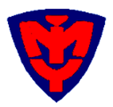
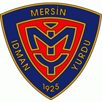

RENKLER ve ARMA Mersin İdman Yurdu, ilk başta Mersin Gençlerbirliği adıyla, renkleri kırmızı-beyaz olarak kurulmasına rağmen daha sonraki yıllarda kulüp Çukurova İdman Yurdu ile birleşmiş ve kulübün adı Mersin İdman Yurdu, renkleri ise kırmızı-lacivert olarak değiştirilmiştir. Kulübün arması ortada kırmızı zemin üzerine "MİY" kısaltması, onun etrafında Mersin İdman Yurdu yazısı ile kuruluş yılı olan 1925 yılı bulunan, aynı oranda değişik ölçülerde yapılan armaydı. Kulübün flaması, boyu eninin bir buçuk katı olan eşit ende ve yatay yönde ikisi üst ve alt kenarda, birisi ortada kırmızı ile iki lacivert şerit içermekteydi 1960'larda Armamız 1970'larda Armamız Günümüzde Armamız |